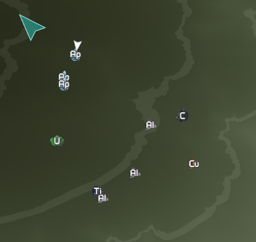

Before you can build or craft anything in GearStorm you will need resources. Resources consist of minerals you
find by mining in the ground, materials you gather from plants and rocks, and things you find around the world.
Minerals:
Most minerals you find buried by mining in the world, you will see minerals on the surface marked with their
periodic element symbols (ie: "Cu" for Copper) on your mini map and main map when you get close enough.
You can also just start digging to find minerals.
Minerals on the map:
